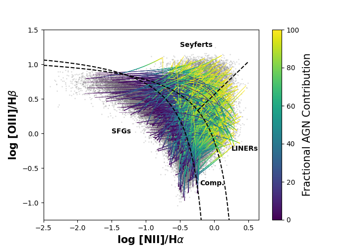

Science
extragalactic astronomer interested in the co-evolution of supermassive black holes and their host galaxies.
Active galactic nuclei (AGN) are the physical manifestation of accretion onto a supermassive black hole (SMBH) in the center of a galaxy. This process produces radiation across the entire electromagnetic spectrum. Radiation produced by the AGN can dominate the luminosity in the central regions of galaxies, or, in the most extreme cases, outshine the combined stellar light of the host galaxy. Such systems are interesting to study as AGN can have profound impacts on their host galaxy, and these events are some of the most energetic phenomena in the Universe!
Fading AGN
AGN are thought to play important roles in regulating star formation in galaxies. Simulations show that without feedback from AGN, galaxies form far too many stars compared to what we observe. Given that these processes take place over millions and billions of years it can be difficult to determine the exact role AGN play in regulating star formation. Using optical IFU spectroscopy, I search for AGN which have turned off in the past ~10,000 years (i.e. fading-AGN). The importance of such systems is two-fold: 1) we can quantify the stellar populations in such systems to determine if these galaxies recently hosted starburst events, and 2) we can place limits on the number of AGN "turning-off" in the local Universe.
To enable such studies, I wrote a piece of code to quantify the contribution of an AGN to its observed spectrum by decomposing emission of the BPT diagram (see Figure below). The code is open source and easy to use, check it out here.
Low-Metallicity AGN
Dummy Text
Transient Events in AGN Disks
Dummy Text
UFDs
Along with AGN, I study a very different regime of faint Milky Way satellite galaxies called "ultra-faint dwarfs." UFDs are among the oldest, faintest, least massive, most metal-poor, and most dark matter dominated galactic systems in the Universe. Due to these properties, UFDs can be used as unique labratories to study the nature of dark matter, the validity of ΛCDM, and galaxy formation on the smallest scales. Check out my recent work on Centaurus I and Eridanus IV published in the Astrophysical Journal alongside the DELVE collaboration.